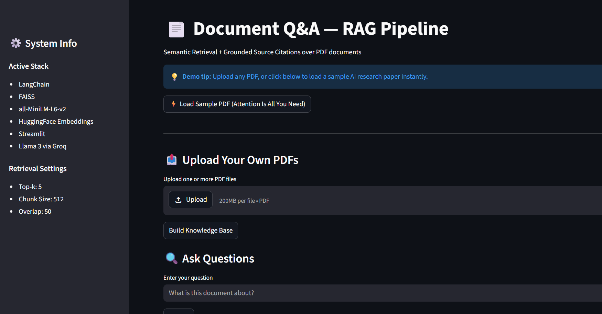

A production-ready Retrieval-Augmented Generation pipeline for semantic querying across 1K+ PDF documents — FAISS vector search, transformer embeddings, grounded answers with source citations.
⚠ Demo runs on Streamlit Community Cloud with a sample PDF. Full 1K+ doc pipeline runs locally.
